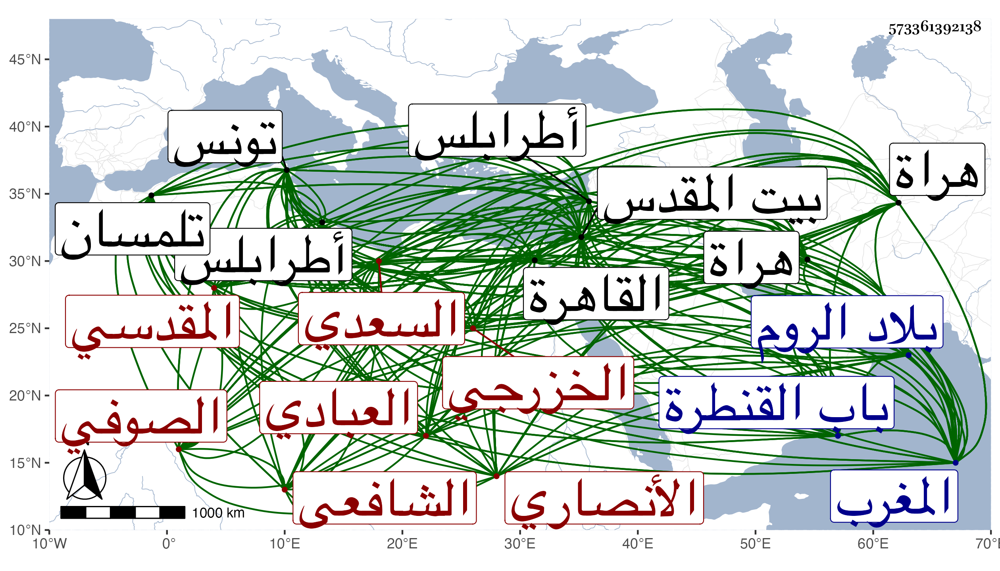

0902Sakhawi.DawLamic.ITO20230111-ara1.EIS1600.573361392138
Biography ID: 573361392138
901
عبد اللطيف بن عبد الرحمن بن أحمد بن علي بن أحمد بن غانم البدر السعدي العبادي الخزرجي الأنصاري المقدسي الشافعي الصوفي الرحال ، ويعرف بابن بنانة بالموحدة وبين النونين ألف وبابن غانم وهو أكثر ، وربما نسب نفسه الغانمي ، ولد في العشرين من رجب سنة ست وثمانين وسبعمائة بالقدس وقرأ به القرآن وبحث النحو والصرف على أبيه وكذا بحث عليه في الفرائض والفقه والمعاني والبيان وفي المعقولات على عبد العزيز الفرنوي وتسلك في طريق القوم ولازمه نحو عشر سنين وعلى نصر التونسي المنهاج الأصلي ، وارتحل إلى المغرب في حدود سنة خمس عشرة وأقام هناك إلى أن حج من تونس سنة سبع عشرة ثم رجع إلى تلك البلاد وطوف بها ولقي مشايخ من أجلهم إبراهيم المسراتي في مسراتا بضم الميم بعدها مهملة وآخره تاء مثناة قرية ببلاد طرابلس ومحمد المغربي الأسمر في تونس وعبد الرحمن بن البناء والشريف أبو يحيى كلاهما في تلمسان وكذا الشيخ الحسن المعروف بأبي الركاب بالكسر والتخفيف وأحمد ابن زاغو والفقيه يعقوب العقباني قاضي الأحكام بتلمسان وأبو عبد الله محمد بن مرزوق ، وأطنب في وصف علماء المغرب الجميلة من الدين والكرم والأوصاف الحسنة وكذب الشائع بين الناس ، ثم رجع إلى القدس بعد سنة عشرين فاجتمع بنور الدين الخافي وصحبه وساك على يده ورحل معه إلى بلاد الشرق ولازمه ثلاث سنين وطوف ما بين هراة وهذه البلاد واجتمع في تلك البلاد بأكابر العلماء منهم بهراة الجمال الواعظ والجلال القابني وولد سعد الدين التفتازاني ، ثم عاد إلى القدس فأقام به مدة ، ثم رحل إلى الروم فأقام به ثلاث سنين يسلك طريق التصوف غير متردد إلى أحد بل الأكابر فمن دونهم يترددون إليه بحيث طلبه السلطان مراد باك بن عثمان فامتنع فجاءه خفية ومع ذلك لم يجتمع به ثم رجع إلى القدس فأقام به إلى بعد سنة أربعين فقدم القاهرة فقطنها وكان بينه وبين الظاهر جقمق صحبة أكيدة في حال إمرته وبشره حينئذ بالملك فوعده إن ولي ببناء زاوية له بالقدس فلم يوف له فانقطع عن الناس جملة بجامع ميدان القمح ظاهر باب القنطرة وكان شيخا حسنا منورا عليه سيما الخير والصلاح سليم الفطرة تقع له مكاشفات ومرائي عجيبة ، وله نظم كثير وقفت له على منظومة في العربية قال إنه عملها لولده وسماها بالعقد وشرحها في كراريس سماه الدر اليتيم في حل العقد النظيم فرغه في بيت المقدس في رمضان سنة سبع وثلاثين ، ومنه :
| إنما النحو كملح في الطعام | إذ به كل تساوي في القوام |
| من درى النحو تراه قارئا | يعرف اللفظ على أصل الكلام |
| يتقيه كل من جالسه | من فقيه حاذق حبر همام |
| هاب أن ينطق من لم يدره | خوف لحن ولخزي في الملام |
| يرفع النصب كجزم دائما | ينصب الرفع إذا جافى السلام |
| يقرأ القرآن لا يعرب ما | صرف النحو باعراب المقام |
| والذي يعرفه يرجع ما | شك في لفظ رواه بالسقام |
| يعرف اللفظ فيبري سقمه | يعرف اللحن بتغيير النظام |
| ما هما فيه سواء عندنا | ليس أعمى كبصير في القيام |
| كم وضيع رفع النحو وكم | وضع اللحن رؤسا في العوام |
| عبد اللطيف الغانمي ناظمها | شهد الأمر عيانا والسلام |
ومنه مما امتدح به الزين الخافي :
| فقم واغتنم حبرا يعز بعصرنا | وسلم له الأحوال في السر والجهر |
| فقد جلت في الأقطار ثم بستة | كمثل لزين الدين لم ألق في الغر |
يعني إنه ما سمع بمثله في الزمن الماضي قبل نبينا صلى الله عليه وسلم وهو فيما يقال ستة آلاف سنة ولا فيما بعد ذلك في أقطار الأرض الأربعة ، وممن ضبط أشياء من مآثره القطب الشيشيني ثم حفيده نور الدين القاضي ولقيه البقاعي فكتب عنه ومات فيما أظن مزاحما للأربعين رحمه الله .
